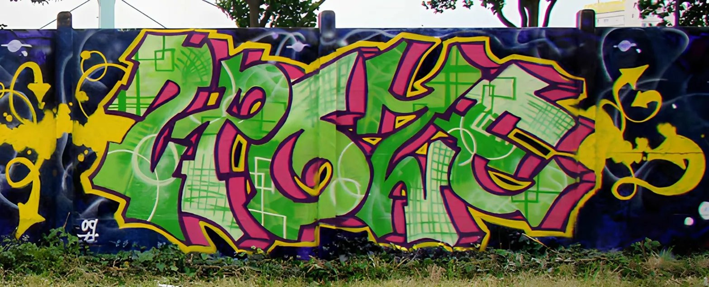
(work) — Graffiti & interventions murales
Fresques, lettrages et interventions sur supports variés — murs extérieurs, béton, briques, tôle. Le travail est centré sur la construction de la lettre comme forme graphique : équilibre, tension, couleur, inscription dans l'espace.
Le graffiti est abordé comme une architecture graphique. Le travail repose sur la construction des lettres, leur équilibre, leur tension, leur inscription dans un espace existant. Il ne s'agit pas de neutraliser le support, mais de composer avec lui : textures, fissures, joints participent à la peinture.
Une pratique affirmée mais non démonstrative. La signature n'est pas revendiquée comme performance, mais comme présence graphique. Faire du mur un espace actif, où la lettre devient une forme construite, visible, assumée, sans discours ajouté.
Murs extérieurs et intérieurs, béton, brique, tôle, parpaing. Fresques urbaines, commandes et pièces libres. Du petit format à la fresque monumentale.
Graffiti · Lettrage · Couleur
Mur · Espace public · Geste · Structure
(galerie)
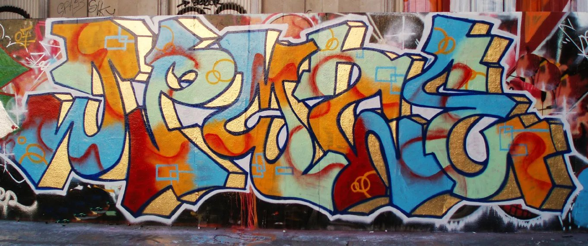
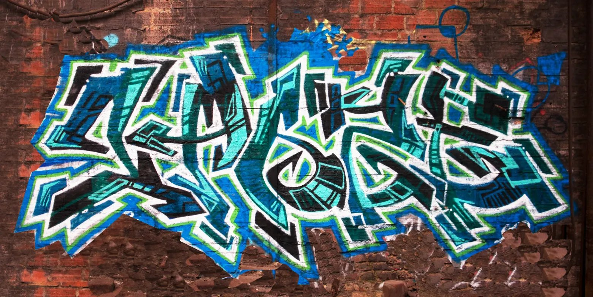
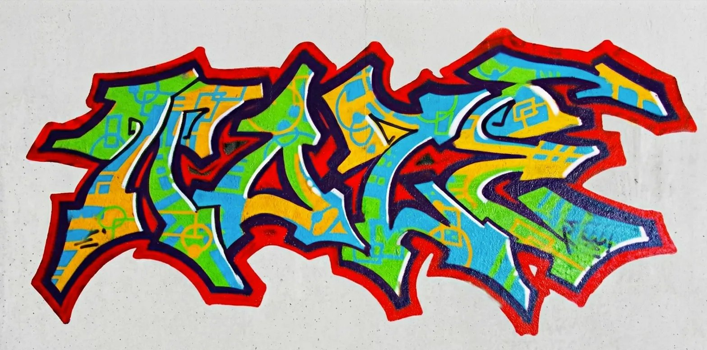
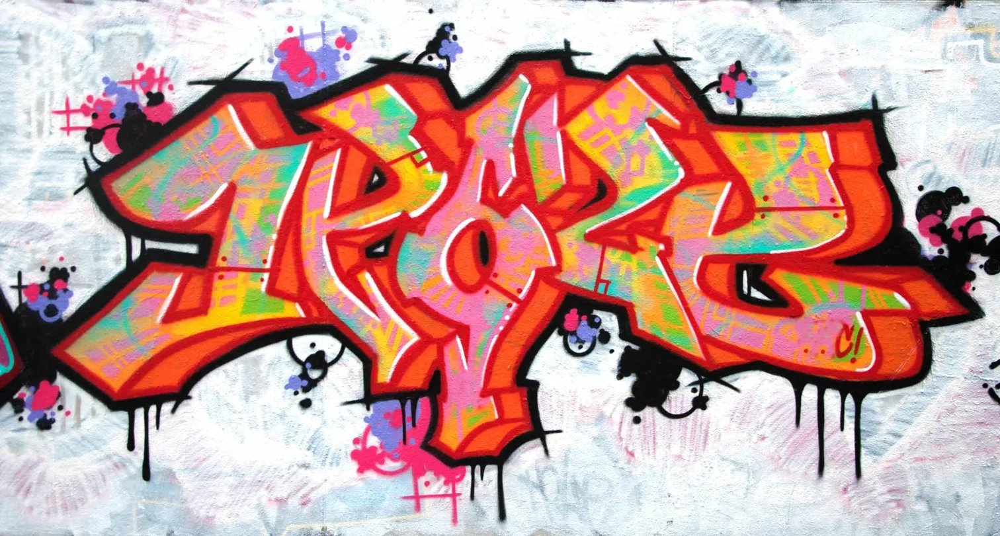
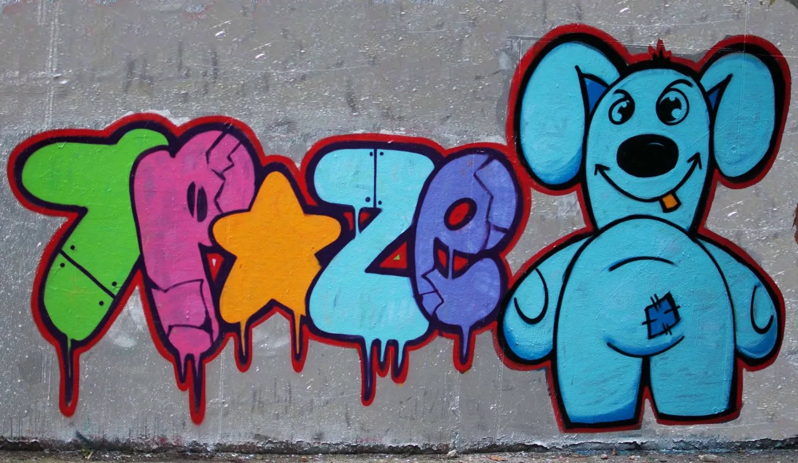
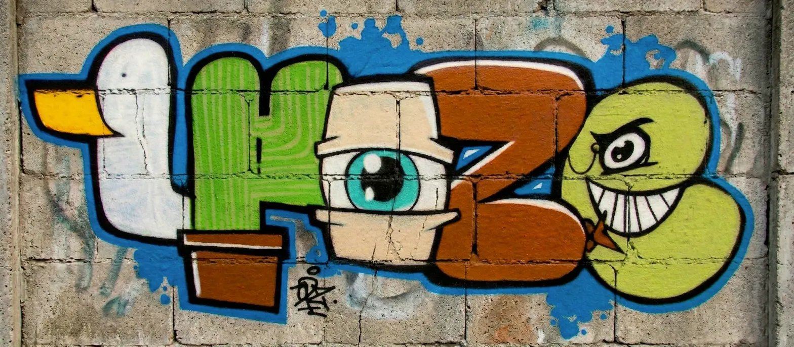
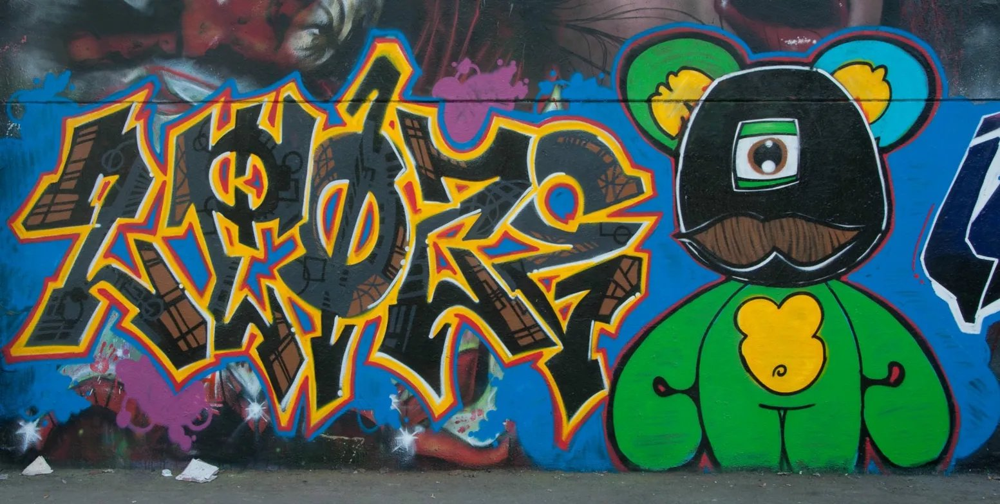
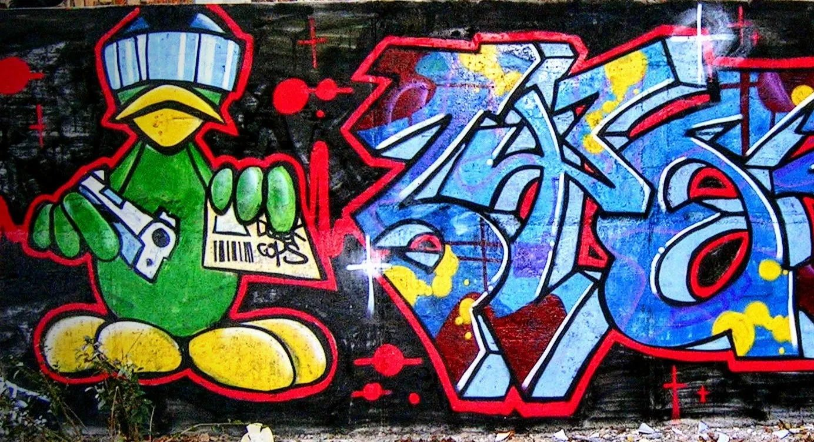
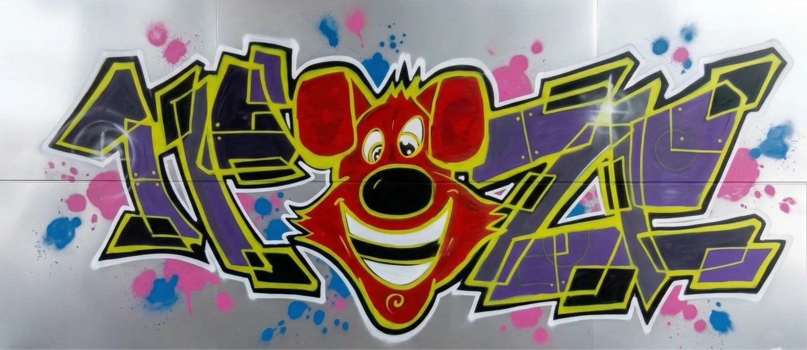
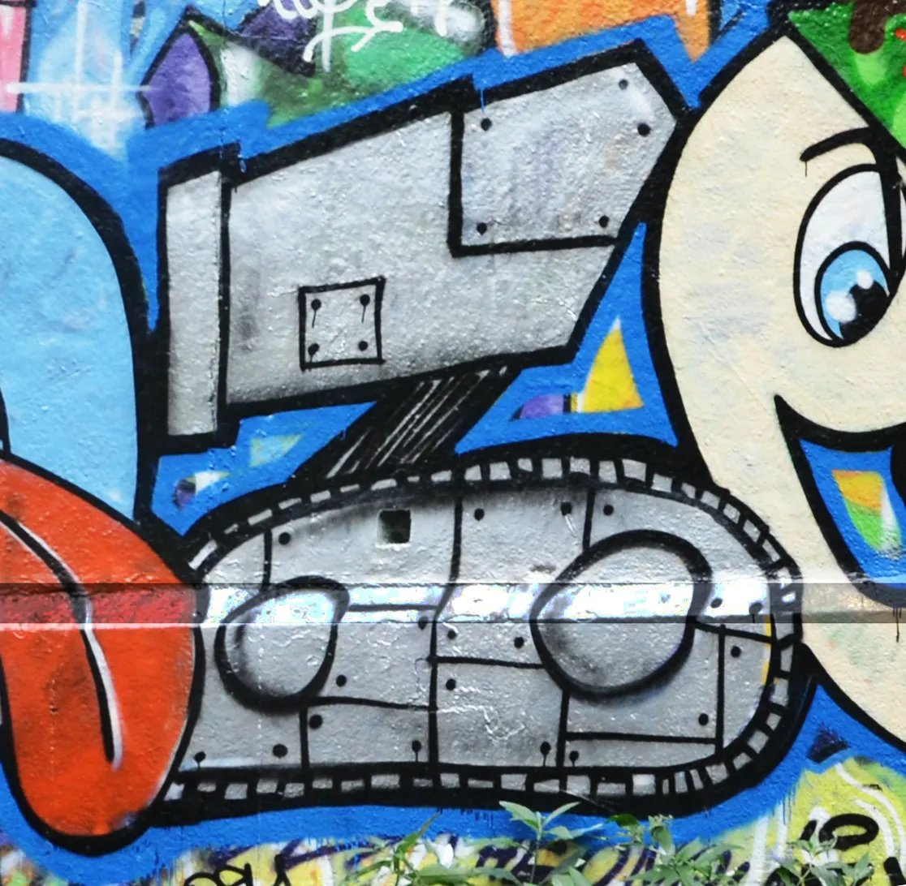
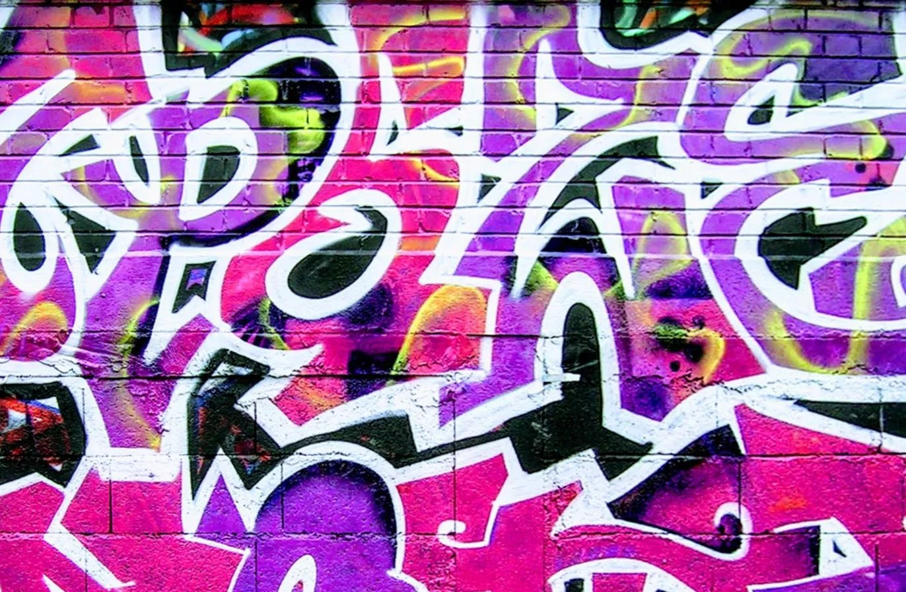